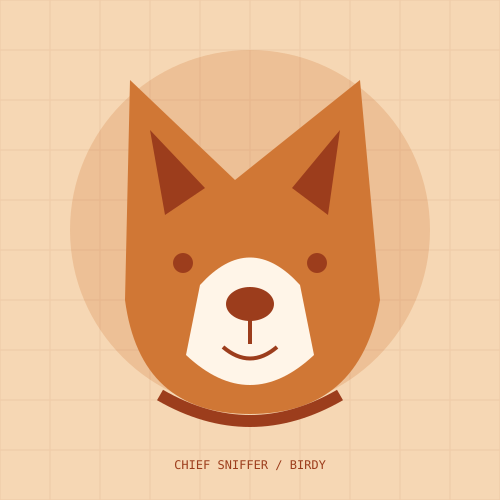

WALKS & LITTLE FINDS
Around the neighborhood
A place for the routes, parks, and quiet stops we visit together. New stories will identify where and when we went.
BIRDY & JORDAN · THE SMALL ADVENTURES
Birdy is a red heeler and brown Lab mix with a talent for making an ordinary day an adventure. This is the home for the walks, the road ahead, and the things we learn along the way.
Austin home base · Travel journal in the making

THE IDEA / IN PRACTICE
We're building a small journal about life with Birdy, dog-friendly outings, and the gear that makes them easier. Only things we actually try will become personal reviews.
WALKS & LITTLE FINDS
A place for the routes, parks, and quiet stops we visit together. New stories will identify where and when we went.
CAMPING & TRAVEL
A travel journal as we test camping and mobile working. No invented destinations or completed trips.
GEAR & COLLABORATIONS
Future gear notes and clearly disclosed partnerships. No affiliate products or merchandise are for sale in this first edition.
THE ORIGINAL CO-PILOT

Original photo preserved from Birdy’s existing website. The hero illustration is a stylized mascot.
A SIMPLE APPROACH
Find one small adventure that works for both of us.
Notice the route, the practical details, and the dog's comfort.
Publish a real experience instead of another generic list.
A FEW GOOD QUESTIONS
Jordan's female red heeler and brown Lab mix, and the inspiration for this pet and travel project.
Yes. Relevant collaboration ideas are welcome. Any sponsorship or affiliate relationship will be disclosed.
Find Fido is the companion guide project. Pawsfect Walks is the local care-service project.
THE NEXT STEP
Send a note or a relevant collaboration proposal. We don't share a home address or live travel location.
Design review only
Live inquiries, appointments, purchases, and subscriptions are not enabled in this preview.
Explore the concept ↗